Sensores Digitales: Percibir la Red
No todos los entornos de un agente son físicos. Para un agente que vive en el ecosistema digital, internet es su entorno y las páginas web, APIs y flujos de datos son sus perceptos. El web scraping ético es, en esencia, el mecanismo por el cual un agente digital percibe el estado del mundo.
En la terminología PEAS:
-
Sensor: Cliente HTTP + Parser HTML/JSON.
-
Percepto: Datos estructurados extraídos (precio, temperatura, estado de un servicio).
-
Entorno: Sitios web, APIs públicas, dashboards.
Arquitectura: Fetch → Parse → Act
Un sensor digital sigue un ciclo que recuerda al bucle fundamental de un agente:

-
Fetch: El agente realiza una petición HTTP al recurso objetivo.
-
Parse: Extrae los datos relevantes del HTML o JSON recibido.
-
Decidir: Evalúa los datos contra sus reglas o umbrales internos.
-
Actuar: Ejecuta una acción (alarma, log, notificación, actualización de estado).
Herramientas del Ecosistema Elixir
| Librería | Rol | Descripción |
|---|---|---|
Cliente HTTP |
Moderno, simple, con reintentos automáticos y manejo de redirecciones. Reemplaza a HTTPoison. |
|
Parser HTML |
Rápido parser de HTML basado en selectores CSS. Convierte HTML en estructuras Elixir navegables. |
|
Parser JSON |
Decodifica respuestas JSON de APIs. Incluido en la mayoría de proyectos Phoenix. |
|
Pool de conexiones |
Para escenarios de alto rendimiento con miles de peticiones concurrentes. |
Implementación: Sensor de Precio de Bitcoin
Veamos cómo construir un sensor que monitorea el precio de Bitcoin como un percepto del entorno financiero digital:
defmodule SensorWeb do
@moduledoc """
Sensor digital para un agente. Percibe datos del
entorno web (APIs, páginas) y los transforma en perceptos estructurados.
"""
@doc """
Obtiene el precio actual de Bitcoin desde la API pública de CoinGecko.
Retorna un mapa con el percepto estructurado.
## Ejemplo de output
%{
asset: "bitcoin",
price_usd: 64523.0,
change_24h: -2.3,
timestamp: ~U[2026-04-20 10:00:00Z]
}
"""
def precio_bitcoin do
url = "https://api.coingecko.com/api/v3/simple/price?ids=bitcoin&vs_currencies=usd&include_24hr_change=true"
case Req.get(url) do
{:ok, %{status: 200, body: body}} ->
btc = body["bitcoin"]
%{
asset: "bitcoin",
price_usd: btc["usd"],
change_24h: Float.round(btc["usd_24h_change"], 2),
timestamp: DateTime.utc_now()
}
{:ok, %{status: status}} ->
{:error, "HTTP #{status}"}
{:error, reason} ->
{:error, reason}
end
end
@doc """
Extrae datos de una página web HTML usando selectores CSS.
Útil cuando no existe una API disponible.
"""
def scrape(url, selector) do
case Req.get(url) do
{:ok, %{status: 200, body: html}} ->
html
|> Floki.parse_document!()
|> Floki.find(selector)
|> Floki.text()
|> String.trim()
{:ok, %{status: status}} ->
{:error, "HTTP #{status}"}
{:error, reason} ->
{:error, reason}
end
end
endAgente Autónomo: GenServer como Monitor
La verdadera potencia de Elixir entra en juego cuando convertimos el sensor en un proceso autónomo que monitorea el entorno indefinidamente. Un GenServer es la herramienta perfecta para esto:
defmodule AgenteMonitor do
use GenServer
require Logger
@moduledoc """
Un agente autónomo que monitorea el precio de Bitcoin
periódicamente y reacciona ante cambios significativos.
Demuestra el patrón Percepto → Decisión → Acción
implementado como un proceso persistente de la BEAM.
"""
# --- API Pública ---
def start_link(opts \\ []) do
intervalo = Keyword.get(opts, :intervalo, 60_000) # 60 segundos
umbral = Keyword.get(opts, :umbral, 5.0) # 5% de cambio
GenServer.start_link(__MODULE__, %{
intervalo: intervalo,
umbral: umbral,
ultimo_precio: nil,
historial: []
}, name: __MODULE__)
end
def estado, do: GenServer.call(__MODULE__, :estado)
def detener, do: GenServer.stop(__MODULE__)
# --- Callbacks ---
@impl true
def init(state) do
Logger.info("🤖 Agente Monitor iniciado. Intervalo: #{state.intervalo}ms")
# Programar el primer chequeo inmediatamente
send(self(), :percibir)
{:ok, state}
end
@impl true
def handle_info(:percibir, state) do
# 1. PERCIBIR: Obtener datos del entorno
percepto = SensorWeb.precio_bitcoin()
state = case percepto do
%{price_usd: precio, change_24h: cambio} = p ->
Logger.info("📊 BTC: $#{precio} (#{cambio}% 24h)")
# 2. DECIDIR: ¿El cambio supera nuestro umbral?
if abs(cambio) > state.umbral do
# 3. ACTUAR: Responder al evento
direccion = if cambio > 0, do: "📈 SUBE", else: "📉 BAJA"
Logger.warning("⚠️ #{direccion} #{abs(cambio)}% — Precio: $#{precio}")
end
# Actualizar modelo interno del mundo
%{state |
ultimo_precio: precio,
historial: [p | Enum.take(state.historial, 99)]
}
{:error, razon} ->
Logger.error("❌ Error al percibir: #{inspect(razon)}")
state
end
# Programar siguiente percepción
Process.send_after(self(), :percibir, state.intervalo)
{:noreply, state}
end
@impl true
def handle_call(:estado, _from, state) do
{:reply, state, state}
end
endUso
# Iniciar el agente monitor
{:ok, _pid} = AgenteMonitor.start_link(intervalo: 30_000, umbral: 3.0)
# El agente ahora corre de forma autónoma en segundo plano.
# Se puede consultar su estado en cualquier momento:
AgenteMonitor.estado()
# Para detenerlo:
AgenteMonitor.detener()|
Scraping Ético: Al usar sensores digitales, debemos respetar las reglas del entorno:
|
Supervisión: Tolerancia a Fallos
En Elixir, un agente no tiene por qué lidiar él mismo con sus errores. Los árboles de supervisión se encargan de reiniciar procesos que fallan:
defmodule AgenteApp do
use Application
def start(_type, _args) do
children = [
{AgenteMonitor, intervalo: 60_000, umbral: 5.0}
]
Supervisor.start_link(children, strategy: :one_for_one)
end
end|
Esta es una de las grandes ventajas de Elixir sobre lenguajes como Python para sistemas agénticos: si el sensor web falla (timeout, DNS, etc.), el supervisor reinicia automáticamente el agente sin intervención humana. Es la filosofía "let it crash" aplicada a la IA. |
Expandiendo: Más Sensores Digitales
El patrón Fetch → Parse → Decide → Act se aplica a cualquier fuente de datos:
| Fuente de Datos | Percepto | Caso de Uso |
|---|---|---|
APIs REST |
Precio, clima, estado de servicio |
Trading, alertas meteorológicas, health checks |
Páginas HTML |
Texto, precios, disponibilidad |
Monitoreo de competencia, alertas de stock |
WebSockets |
Eventos en tiempo real |
Chat bots, feeds de mercado, IoT dashboards |
RSS/Atom |
Noticias, publicaciones |
Curación de contenido, alertas de noticias |
Email (IMAP) |
Mensajes entrantes |
Agente de soporte, clasificación automática |